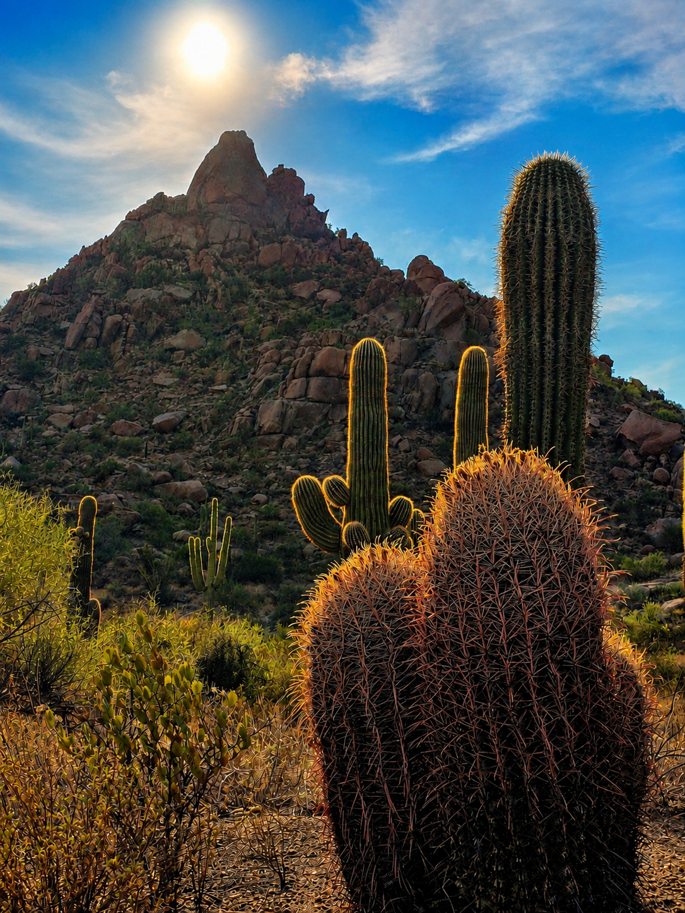
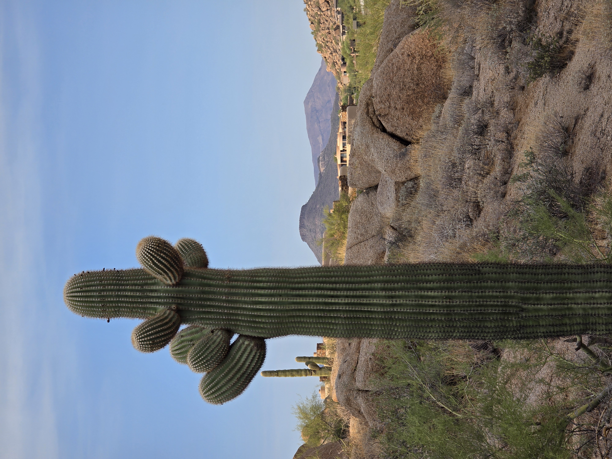
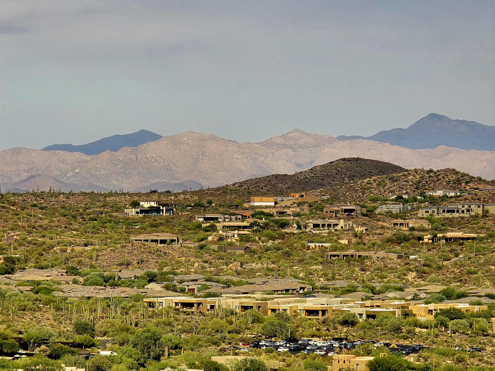
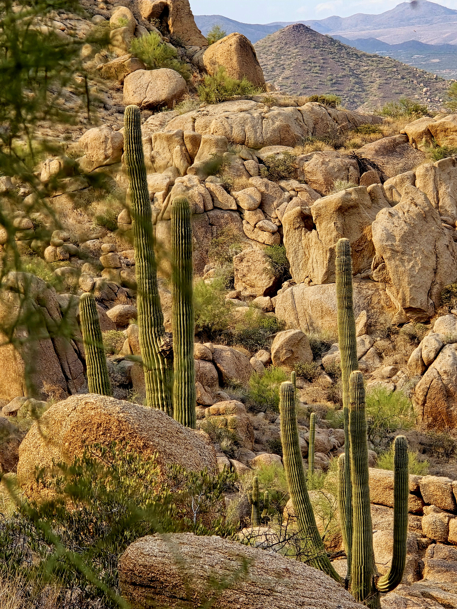
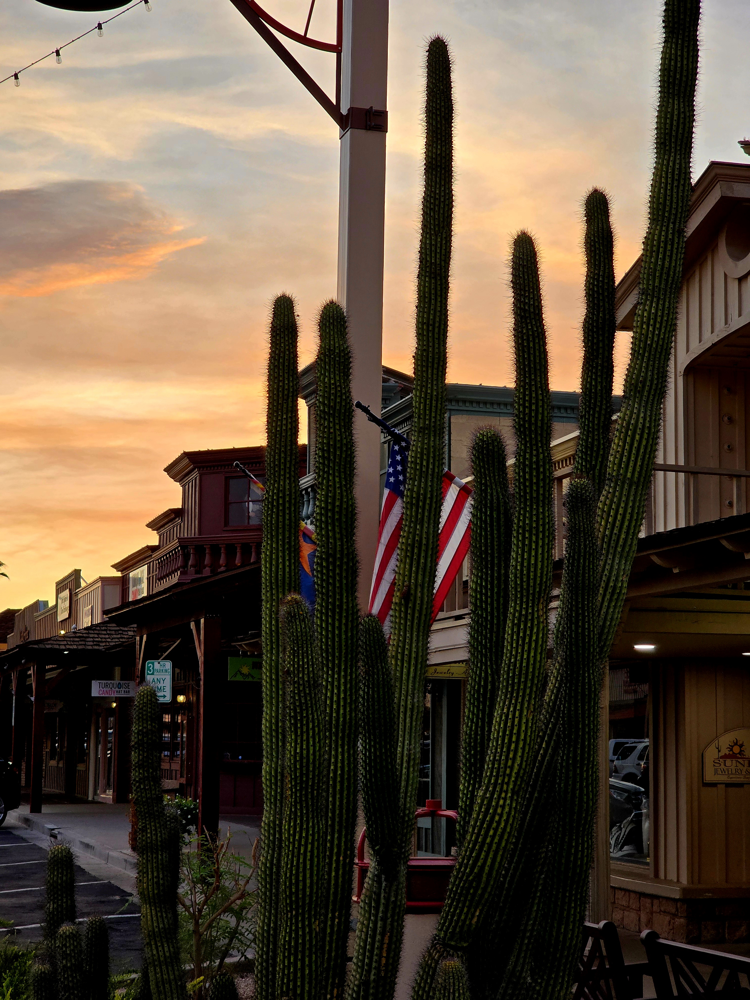
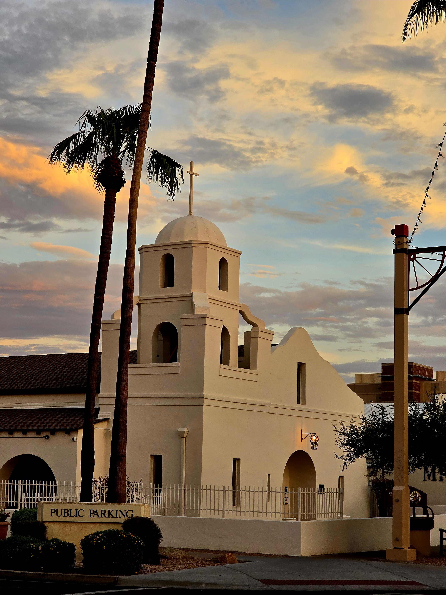

L'avventura in Arizona prende ufficialmente il via alle 12:50 con l'atterraggio all'aeroporto Sky Harbor di Phoenix. Sbrigate le pratiche di rito e ritirata l'auto a noleggio, guidiamo verso Scottsdale per un rapidissimo check-in in hotel intorno alle 14:30. Giusto il tempo di sistemare i bagagli e siamo pronti a sfidare le temperature del deserto: ci dirigiamo subito al Pinnacle Peak Trail per la prima escursione del viaggio. Il percorso si snoda tra enormi massi granitici e spettacolari cactus Saguaro, regalandoci scorci panoramici pazzeschi sulla vallata circostante. Dopo una rigenerante doccia in hotel, concludiamo questo splendido Giorno 1 a Old Town Scottsdale: una suggestiva passeggiata serale tra negozi storici, saloon e la caratteristica Old Adobe Mission, immersi nel piacevole e intenso calore della notte dell'Arizona che segna ancora ben 32 gradi.





